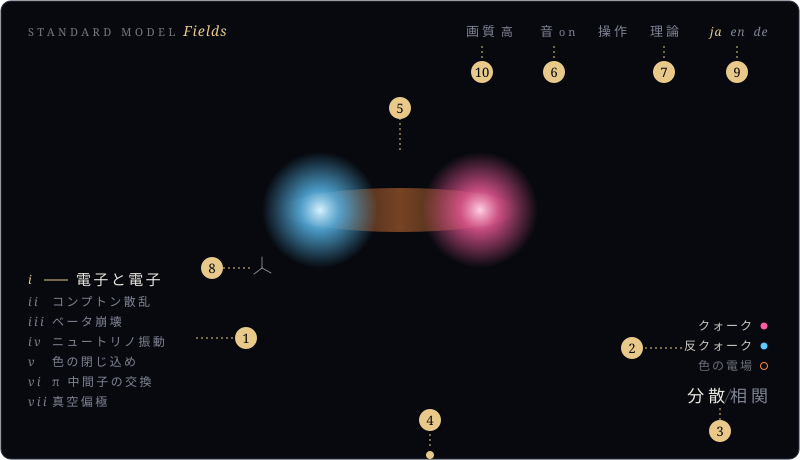
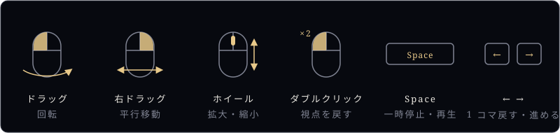

操作方法
描写のページで動かせるもの
§画面

- トピックを選ぶ
- 場の名前を押して、表示 / 非表示（点は場の色）。相関では「…の位置（仮定）」で選んだ点も
- 分散 / 相関を切り替える
- 下の端の線をドラッグして、時刻を動かす
- 画面のドラッグ・ホイールで視点を動かす（下の図）
- 音の on / off
- 理論のページへ
- 座標軸を押して、元の視点に戻す
- 言語（ja 日本語・en 英語・de ドイツ語）。理論と操作方法のページも同じ言語になる
§視点と時間

§何もしないとき
トピックを順に、分散 → 相関の順で自動で再生します。操作すると止まり、最後の操作から 45 秒で自動の再生に戻ります。